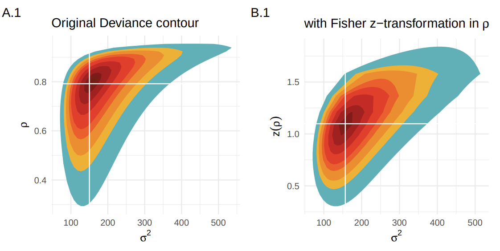
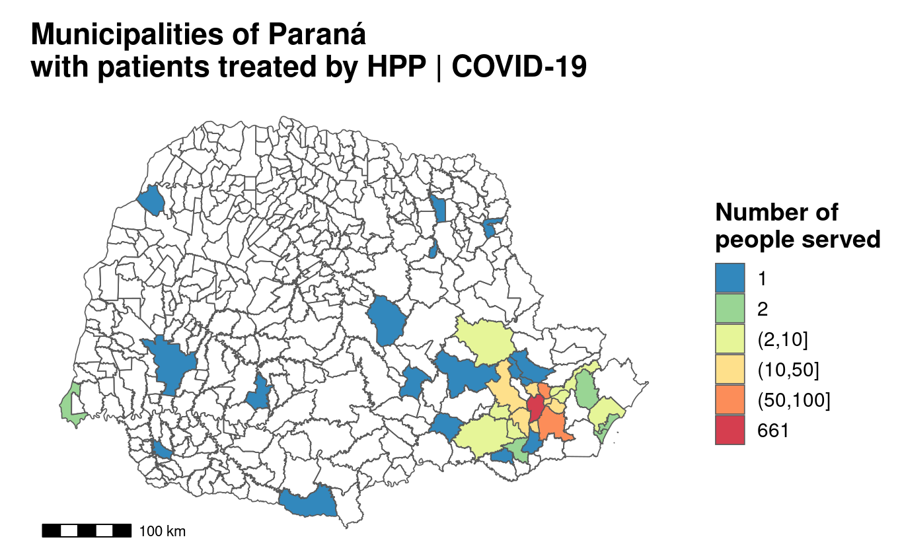

A linear model with two covariates seen at the same time in terms of both (3d).
US Real interest ex-post trimester time series from 1961 until 1986, with empiric M-fluctuation process based on the scores of a fitted model (break/change points).
The curve fits obtained through each gradient descent iteration until convergence, in red.
Sequential Bayesian learning of a simple linear model with one covariate.
Clustering results of the DbScan algorithm for different minpts parameter values.
Clustering results of the DbScan algorithm for different eps parameter values.
A: Deviance contour of the quadritic approximation for a bivariate Gaussian with zero mean; B: Quadratic approx. added into the original likelihood-based deviance contour.

Deviance contours for a bivariate Gaussian with zero mean.
Deviance contours with the parameters estimate at each optimization algorithm function evaluation.
Posterior mean and 95%, fig-align=‘center’ credible interval of a random walk model of 1st order for smoothing splines without intercept.
Logistic regression (binomial generalized linear model with logistic link function) stratified by a covariate and with 95%, fig-align=‘center’ confidence bands. A) whole dataset; B) model fitting without the three biggest outliers.
Boxplot and histograms with some extra descriptive measures of the marathon times of 40 guys.
Pre and post-competition body measures.
Heatmap of pains distribution in a group of 98 elderlies during the COVID-19 pandemic.
Malaria incidence versus relative humidity in a five years period in the Amazon biome.
WHO severity score distribuitionof 206 pacients.
Heatmap of adverse effects (meta-analysis).
Prevalence of neoplasias in hospitalizations in Curitiba’s health regional, Paraná state.
Heatmap of correlations.
Prevalence of anomalies in ambulatorial calls in Paraná state, by municipality and by health regionals.
Average prevalences in the Paraná state by health regionals.
Impact Hazard Index for relative humidity, a PCA made from several variables.

Paraná state (Brazil) map.
Barplots of comorbidities.
Confusion matrix of two different (outcomes) logistic regressions (binomial GLM with logit link function).
Barplot and heatmap of long-term symptoms in a group of people who had COVID-19.
Heatmaps of presented symptoms during and long-term in a group of people who had COVID-19.
Symptoms split-barplot of during/long-term outcomes in a group of people who had COVID-19.
Heatmap of reinfections in a group of people who had COVID-19.
Boxplots with means and standard deviations of grades by type of test in a population of almost 2 million people.


 {width=75%, fig-align=‘center’, fig-align=‘center’}
{width=75%, fig-align=‘center’, fig-align=‘center’}